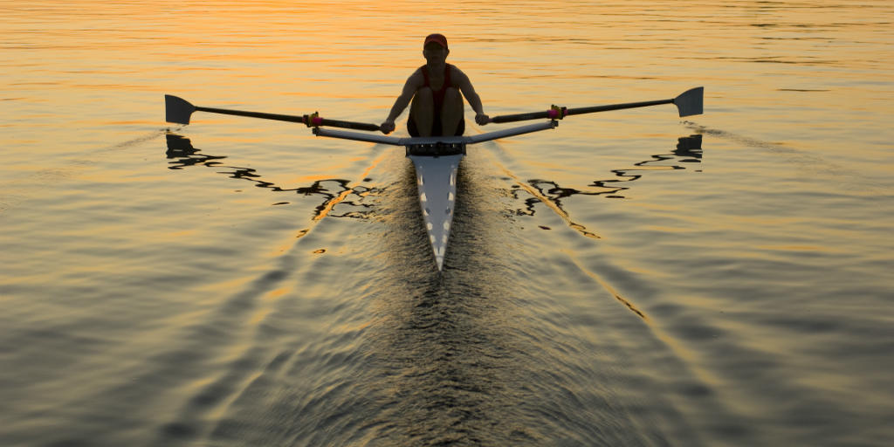

The official website of World Rowing, the international rowing federation.

The 12th BaselHead Regatta had the Netherlands taking out top honours in both the men’s and women’s eight. The
Dutch also dominated in the 350-metre sprint event with A.S.R. Nereus recording the fastest time.